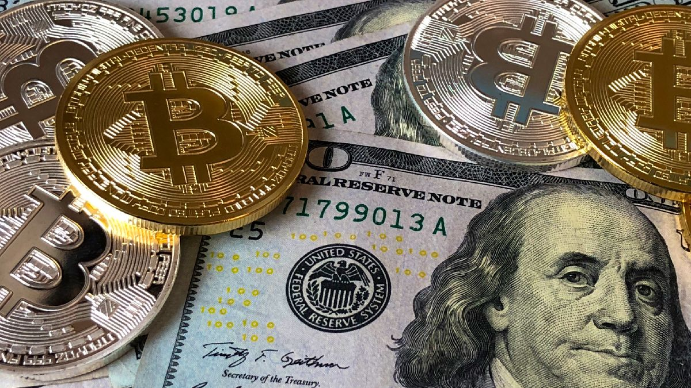
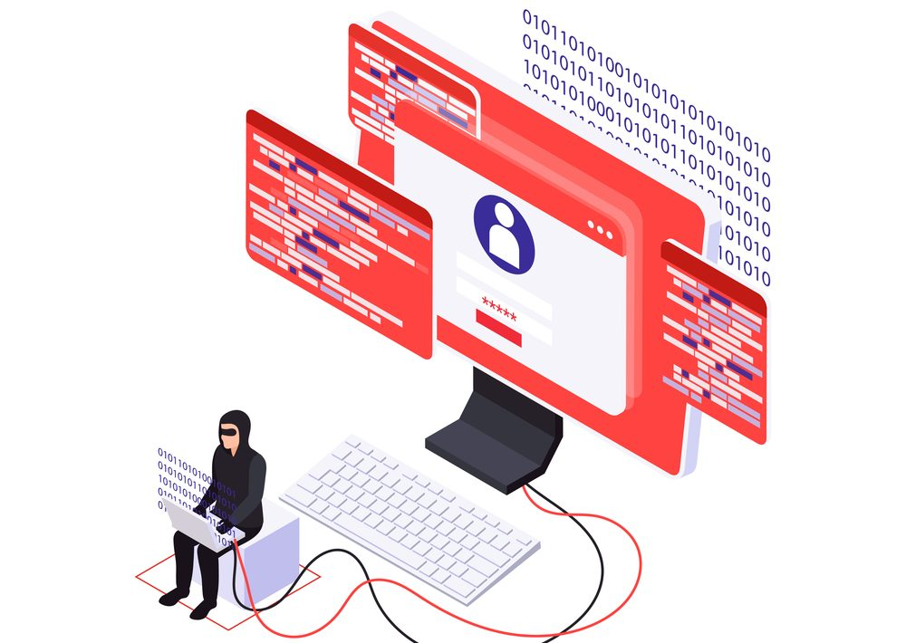

Daca luaţi în considerare potenţialul acestora drept activ speculativ, poate vă întrebaţi cum puteţi
cumpăra şi vinde NFT-uri. NFT-urile sunt tranzacţionate în cryptomonede, aşadar va trebui în primul
rând să cumpăraţi cryptomonede şi să le păstraţi într-un portofel. Va trebui apoi să vă înregistraţi
pe o piaţă NFT, precum Nifty Gateway, OpenSea sau Rarible. Vânzările de oibcie iau forma unei
licitaţii cu un preţ NFT de început, aşadar dacă plasaţi o oferă câştigătoare veţi deveni proprietarul
NFT-ului. Dacă valoarea sa creşte ulterior, puteţi realiza propria lictiaţi pe o piaţă şi să îl
vindeţi pentru un profit. Deşi achiziţionarea de NFT nu transferă drepturile de autor ale operei,
acesta conferă drepturile de utilizare de bază, precum postarea unei imagini online.

Ca în cazul oricărui nou activ care se află în primele etape de dezvoltare şi adopţie, NFT-urile au
anumite riscuri, aflându-se departe de a fi acceptat în masă. Dacă un investitori optează să cumpere
un NFT şi interesul în tranzacţionarea acestuia stagnează sau chiar scade, preţurile vor scădea iar
cumpărătorul ar putea avea pierderi majore. NFT-urile nu sunt scutite de fraudă. NFTS-urile care
susţin că sunt operele unor artişti bine cunoscuţi au fost vândute pentru sute de mii de dolari dar
s-au dovedit a fi falsuri. Iar în acelaşi fel în care cryptomonedele pot fi furate, NFT-uri pot face
subiectul unui furt în funcţie de felul în care sunt stocate. Un alt risc de luat în considerare
este că conţinutul digital nu este complet scutit de deteriorarea în calitate, formatele de fişier
pot fi scoase din uz, website-urile pot deveni offline temporar sau chiar permanent, iar parolele
portofelelor pot fi pierdute.

Popularitatea NFT a crescut, de asemenea, șansele de amenințări cibernetice la adresa pieței NFT. Sunt
vizibile o mulțime de cazuri în care replici ale magazinelor originale NFT sunt puse pe internet.
Aceste magazine arată autentic datorită logo-ului și conținutului original. Aceste magazine NFT false
reprezintă un risc masiv, deoarece ar putea vinde NFT-uri care nici măcar nu sunt prezente în lumea
digitală. În plus, există șanse ca NFT-urile contrafăcute să fie vândute într-un magazin NFT fals.
Un alt risc este acela în care cineva se uită la un artist celebru NFT și vinde NFT-uri false. Riscul
de fraudă online este enorm datorită furtului de drepturi de autor, airdrops-urilor false, cadourilor
NFT false și replicării NFT-urilor populare. Unii oameni chiar promovează astfel de cadouri pe
rețelele sociale pentru a câștiga mai multă atracție. În timp ce promovează NFT, unii oameni sunt
înșelați la astfel de magazine false.
NFT-urile sunt create printr-o piaţă NFT, unde un creator încarcă un fişier original şi îi
atribuie caracteristici, precum dacă acesta este unicat, dacă are copii multiple sau dacă face
parte dintr-o colecţie. Odată ce NFT-ul este creat, proprietarul poate să-l vândă pe piaţă în
cadrul unei licitaţii. Deşi majoritatea NFT-urilor de până acum rulează pe blockchain-ul Ethereum,
alte blockchain-uri precum WAX au abilitatea de a creea tokenuri originale la care creatorii pot
ataşa fişiere. Acum că aţi înţeles mai bine subiectul, vreţi să ştiţi cum să cumpăraţi NFT-uri?
Cum se explică atenţia din jurul NFT-urilor? Reprezentând un istoric digital al unui activ din
lumea reală, NFT-urile pot fi folosite pentru a obţine şi schimba active fizice pe piaţa digitală.
Acest lucru are potenţialul de a creşte revoluţia NFT în achiziţionarea şi vânzarea de obiecte
rare şi valoroase.Când un NFT este creat pe blockchain şi conţinutul asociat este încărcat,
proprietarul are dovada că este singurul deţinător al tokenului, stabilind raritatea activului.